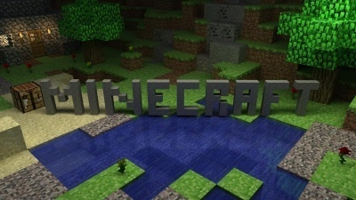

When minecraft first came out, I thought I wouldn’t enjoy playing the game because I generally didn’t enjoy open ended games. I had tried playing World of Warcraft before, but the sheer number of options open to a new player put me off. When I was playing a video game, I wanted there to be a plot, with a goal or a story or something!
My attidude has shifted. Now I really enjoy the lack of structure in minecraft. The fact that it’s almost entirely open ended is pretty fun because I get to decide how to play whenever I play. Do I want to build something? Do I want to mine? Do I want to construct a cpu inside of my game so I can program in my program?
But how do you make a game where you can do anything fun? With self imposted limit. I choose to play in survival mode rather than in creative mode. Why would I choose to make something harder? It’s because certain kinds of fun come from doing something hard. I think an integral part of play is the challenge.
Minecraft illuminates how in all games, we impose limits on our selves. There’s a greater sense of accomplishment that comes from creating something where you had to forage all the materials your self. It's harder but it's more fun.
My problem initially with minecraft was that making up your own story is hard but because it's hard it's more fun. It forces me to be more active and creative. And I like that
{kind=link}